|
4-3-3
|
Colombia | 0 | - | 0 | Portugal |
4-2-3-1
|
| HT 0-0 | ||||||
|
FIFA World CupSunday 28 June 2026
|
||||||
- Venue
- Miami Stadium
- Attendance
- 64,478
- Referee
- Alireza Faghani
- 2
Substitution60'
J. Lerma
R. Ríos
J. Córdoba
L. Suárez
- 2
Substitution76'
J. Arias
K. Castaño
J. Rodríguez
J. Quintero
Yellow card86'
G. Puerta
Substitution87'
S. Arias
D. Muñoz
Whistle45+4'
45+4'
- 2
Substitution46'
João Cancelo
Diogo Dalot
Rúben Neves
João Neves
- 2
Substitution70'
João Félix
Rafael Leão
Vitinha
Samú Costa
Substitution90+2'
Nuno Mendes
Matheus Nunes
Colombia | |
|---|---|
Goalkeeper | |
| 12 | C. Vargas |
Defender | |
| 3 | J. Lucumí |
| 4 | S. Arias 87' |
| 22 | D. Machado |
| 23 | D. Sánchez |
Midfielder | |
| 11 | J. Arias 76' |
| 14 | G. Puerta 86' |
| 16 | J. Lerma 60' |
Forward | |
| 7 | L. Díaz |
| 9 | J. Córdoba 60' |
| 10 | J. Rodríguez 76' |
Substitutes | |
| 2 | D. Muñoz 87' |
| 5 | K. Castaño 76' |
| 6 | R. Ríos 60' |
| 20 | J. Quintero 76' |
| 25 | L. Suárez 60' |
Portugal | |
Goalkeeper | |
| 1 | Diogo Costa |
Defender | |
| 3 | Rúben Dias |
| 13 | Renato Veiga |
| 20 | João Cancelo 46' |
| 25 | Nuno Mendes 90+2' |
Midfielder | |
| 8 | Bruno Fernandes |
| 11 | João Félix 70' |
| 18 | Pedro Neto |
| 21 | Rúben Neves 46' |
| 23 | Vitinha 70' |
Forward | |
| 7 | Cristiano Ronaldo |
Substitutes | |
| 5 | Diogo Dalot 46' |
| 6 | Matheus Nunes 90+2' |
| 15 | João Neves 46' |
| 17 | Rafael Leão 70' |
| 24 | Samú Costa 70' |


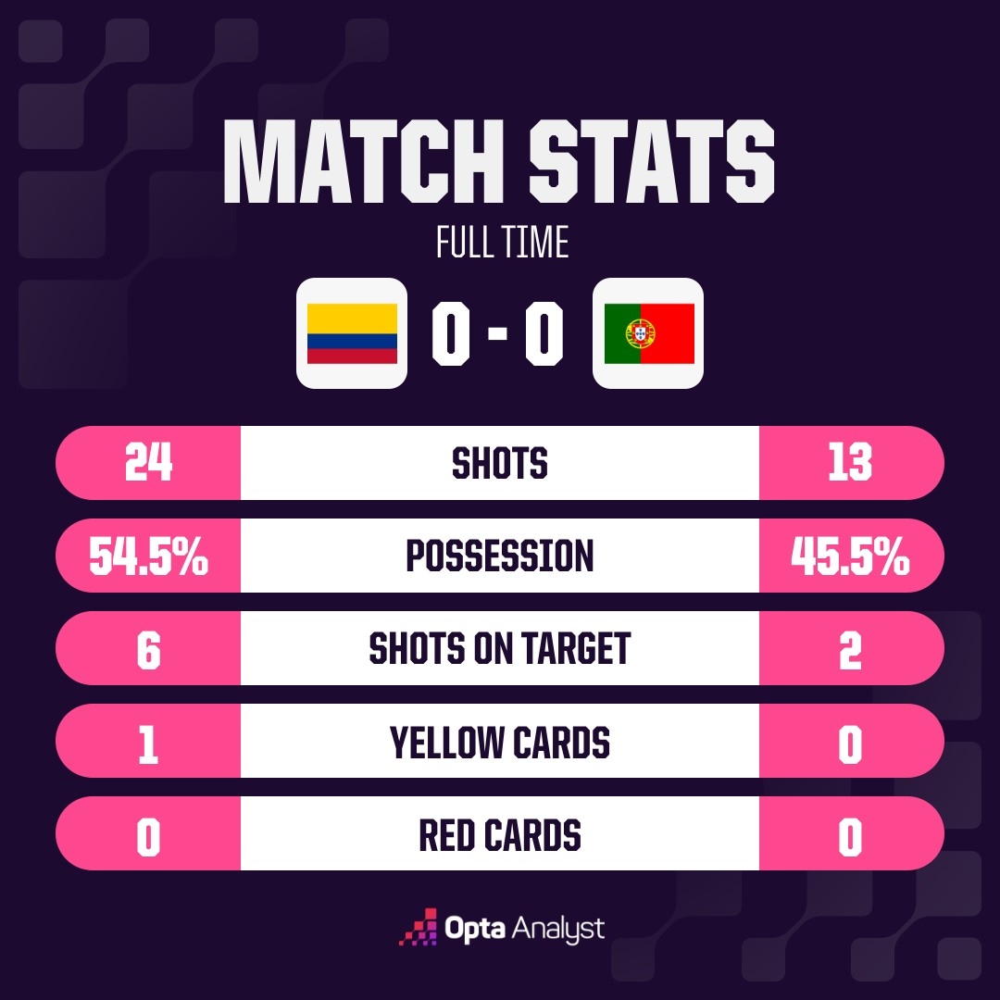
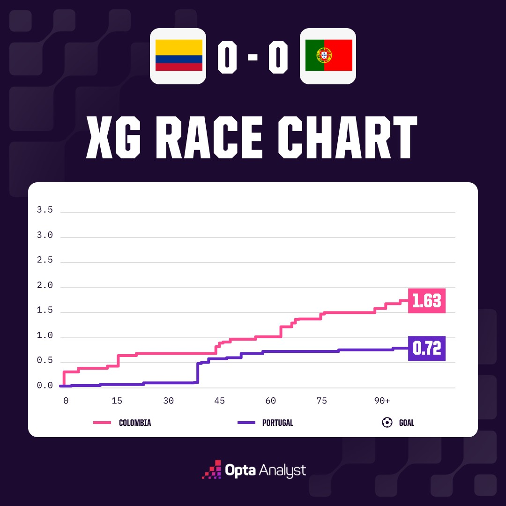
97'
Portugal are undefeated in their last 3 games in the FIFA World Cup, their last longer unbeaten streak was from 22nd June 2014 to 25th June 2018, a run of 5 games.
97'
Colombia are undefeated in their last 6 games in the FIFA World Cup, their longest unbeaten streak in the competition (since at least 1965/1966).
90+6'
That's it! The referee blows the whistle and we have reached full-time. The final score at Miami Stadium is Colombia 0-0 Portugal.
90+5'
A rash challenge from Daniel Muñoz, who sends Diogo Costa tumbling, giving Portugal a free-kick. It is not in a threatening position, but it gives them a chance to get back on the ball.
90+5'
BLOCK! An intervention from Rúben Dias might have just prevented a goal, with the defending player getting in the way of an attempt from Gustavo Puerta. Solid defending there!
90+3'
That is a disappointing effort from Rafael Leão, who went for glory but got their attempt wrong, and the shot sailed off target. A frustrating moment for Portugal.
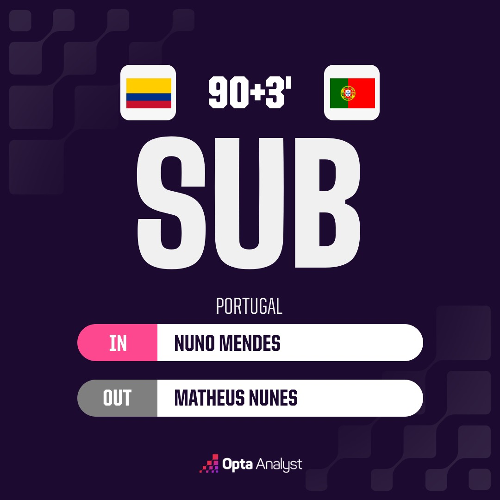
90+2'
The Portugal manager is looking to the substitutes’ bench, bringing on Matheus Nunes in place of Nuno Mendes. Will the change make a difference? Let’s find out!
90+1'
Portugal offside trap works a treat as they step up and catch Davinson Sánchez offside. Colombia are searching for a goal, but their players will need to play smarter to keep themselves on the right side of the line.
90+1'
It is a corner now to Colombia, with Portugal somewhat hanging on here as they look to hold out for a positive result. Can Colombia make something of this set-piece opportunity?
90+1'
MISS! A shot from Luis Suárez ends up being off target. They might have done a bit better with that one, but it remains Colombia 0-0 Portugal.
88'
MISS! The score remains 0-0, with Portugal relieved after Colombia’s Luis Suárez goes for goal but sends their attempt off target. Not one to write home about, that one.
88'
No goalmouth action for some time now, with neither team having had a shot in the past 10 minutes. Will there be a moment that changes things soon? Colombia have seen plenty of the ball, however, with 55 per cent of the possession in their favour during that period.
87'
Santiago Arias’s match is over as Colombia decide to make a substitution. Daniel Muñoz enters the field in what looks like a tactical change.
86'
That is a booking for Gustavo Puerta, who has received their first yellow card. They are not happy with the decision, but it is done now, and they will have to be careful for the rest of this game.
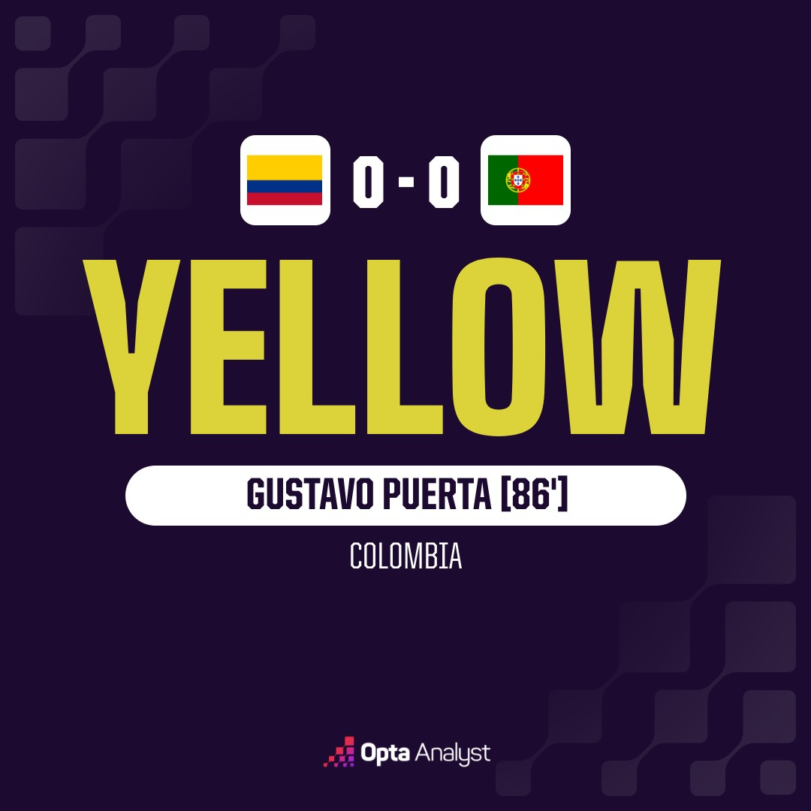
84'
Neither side wants to be the first to blink here. Colombia with another patient 20+ pass sequence - in these dying minutes, one mistake could be fatal.
83'
Free-kick! A foul from Rúben Dias on Richard Ríos. It is well away from Portugal’s goal, so it is unlikely to result in a chance for Colombia.
82'
The pressure is starting to build. Portugal with a cluster of set-pieces as they look to make it count.
82'
Good play from Bruno Fernandes, who draws a foul from Richard Ríos to hand Portugal a free-kick in a dangerous position. Will they create something from this set-piece?
81'
A foul from Santiago Arias on Rafael Leão sees Portugal win a free-kick, but it is not in a dangerous position, so Colombia should be confident they can defend it easily enough.
80'
Can Colombia survive here? They will have some defending to do after the ball is turned behind for a corner kick. Will Portugal take this opportunity and grab the goal they have been pushing for?
79'
A foul from Gustavo Puerta on Pedro Neto sees Portugal win a free-kick, but it is not in a dangerous position, so Colombia should be confident they can defend it easily enough.
78'
No luck! Diogo Dalot takes on a shot that, had they got it right, might have been set to test the goalkeeper, but instead it is sent off target and Colombia come away unscathed.
77'
A chance now for Portugal to get a good delivery into the box, after the ball is diverted behind for a corner. Portugal have been pushing for what would be a key goal, but Colombia have stood firm so far.
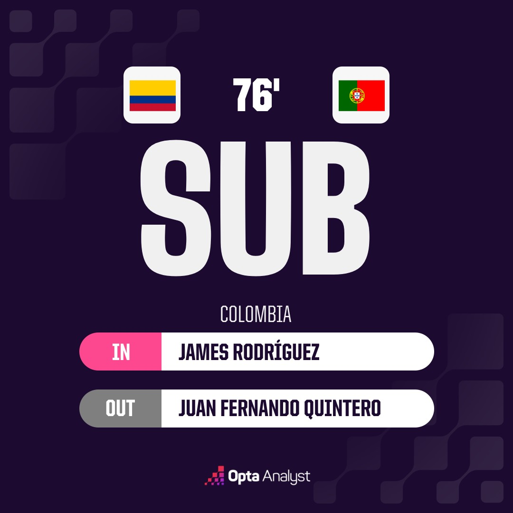
76'
Substitution! Juan Quintero replaces James Rodríguez for Colombia as the manager shuffles the pack. Can Juan Quintero make an impression as this match continues?
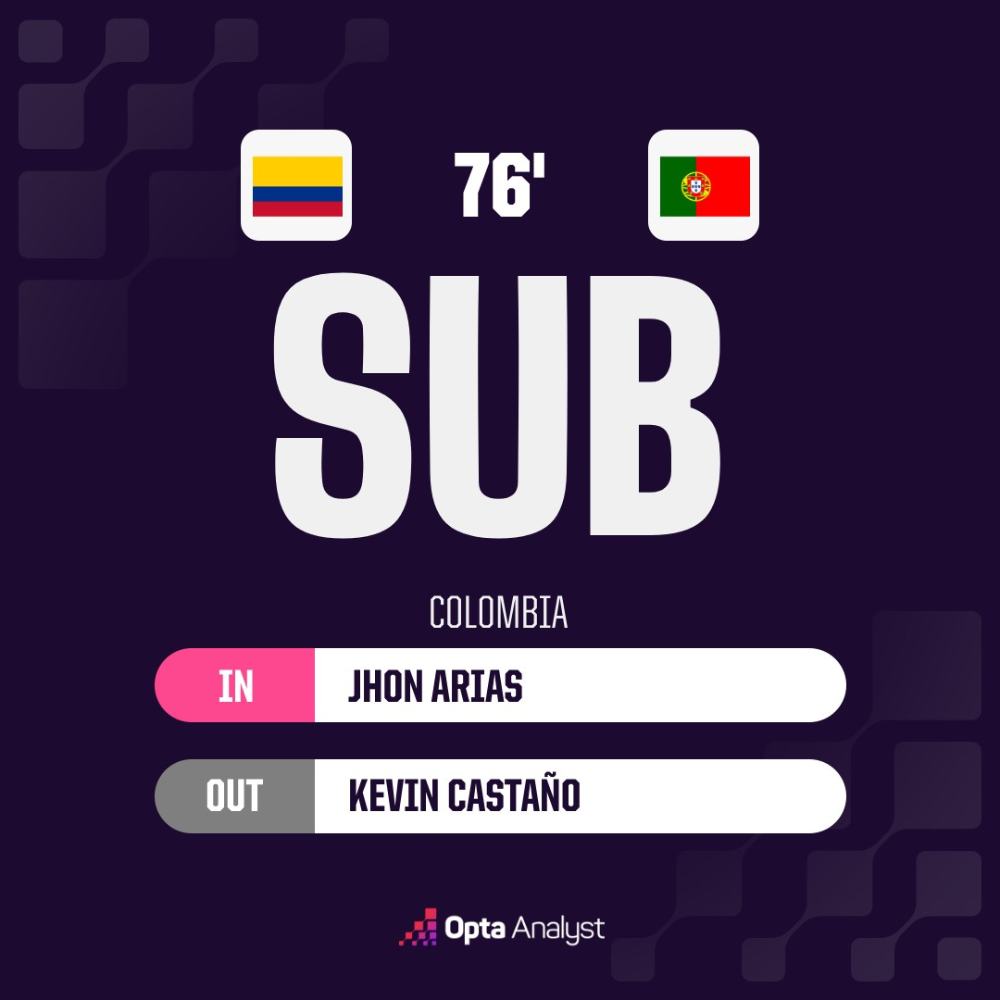
76'
Colombia are making a tactical change. Jhon Arias is leaving the field and in their place comes Kevin Castaño – we will soon see if this switch has the desired impact.
76'
Entering the final stages of this contest, let’s check on the possession stats for each team. It is Colombia who have had the more of the ball, with 56.00%, while Portugal have had to settle for 44.00%. The score is 0-0.
75'
Free-kick! A foul from Deiver Machado on Diogo Dalot. It is well away from Colombia’s goal, so it is unlikely to result in a chance for Portugal.
74'
A foul from Richard Ríos on Nuno Mendes sees Portugal win a free-kick, but it is not in a dangerous position, so Colombia should be confident they can defend it easily enough.
74'
Portugal have a corner to defend now after Renato Veiga diverts an attempt from James Rodríguez out of play. Can Colombia take this chance to get a good delivery in and really test their opponent’s defence?
73'
A chance goes begging as Luis Suárez gets off a shot that does not hit the target. They might have done better with that one, but instead it is a goal-kick to Portugal.
73'
Santiago Arias has created 5 chances, his highest total in a single match in the FIFA World Cup.
73'
In the last 15 minutes, it is Colombia who have dominated the ball, having seen 65.25% of the possession, yet they have not been able to go and turn that into a goal just yet, with their opponents standing firm.
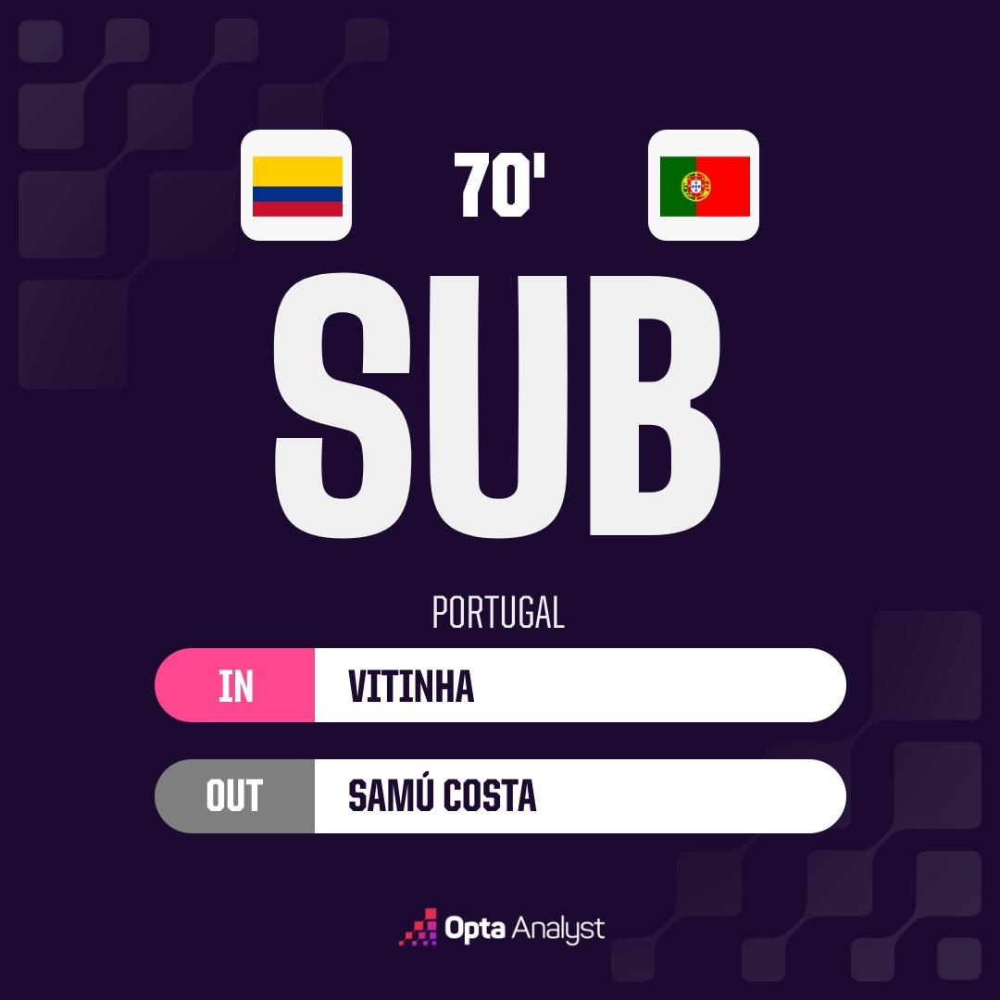
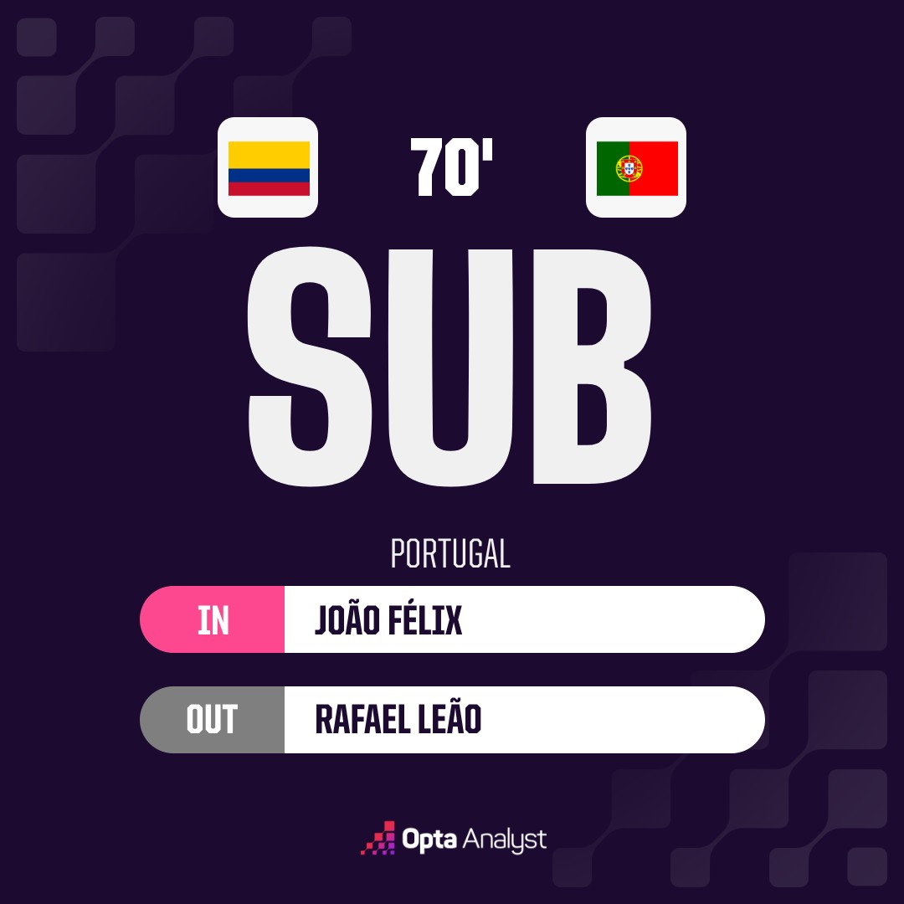
70'
Portugal are making a tactical change. Vitinha is leaving the field and in their place comes Samú Costa – we will soon see if this switch has the desired impact.
70'
João Félix’s match is over as Portugal decide to make a substitution. Rafael Leão enters the field in what looks like a tactical change.
67'
A chance goes begging as Gustavo Puerta gets off a shot that does not hit the target. They might have done better with that one, but instead it is a goal-kick to Portugal.
66'
Jhon Arias's effort is deflected out for a corner. Can Colombia make anything of this set-piece?
66'
With 25 minutes left to play, it’s a good chance to check in on the shot count. Portugal have mustered 11 so far, with 2 of those landing on target. On the other hand, Colombia have gotten 17 of their 5 of attempts on target.
65'
A chance goes begging as Davinson Sánchez gets off a shot that does not hit the target. They might have done better with that one, but instead it is a goal-kick to Portugal.
65'
James Rodríguez has created 5 chances, the first time he has created at least 5 chances in a match in the FIFA World Cup since facing Congo DR on 24th June 2026 (5 chances created).
65'
Corner now for Colombia, as they see a shot from Luis Suárez deflected out of play for a set-piece. Portugal have some defending to do, here. Could this result in a big opportunity?
63'
A rash challenge from Richard Ríos, who sends Vitinha tumbling, giving Portugal a free-kick. It is not in a threatening position, but it gives them a chance to get back on the ball.
62'
MISS! How has that not gone in? A complete lack of composure shown from Richard Ríos, who squanders a golden chance for Colombia, whose coach looks on frustrated from the touchline. A real let off for Portugal!
60'
A substitution for Colombia sees Jhon Córdoba replaced by Luis Suárez. There does not appear to be any obvious sign of an injury, so that is a tactical switch.
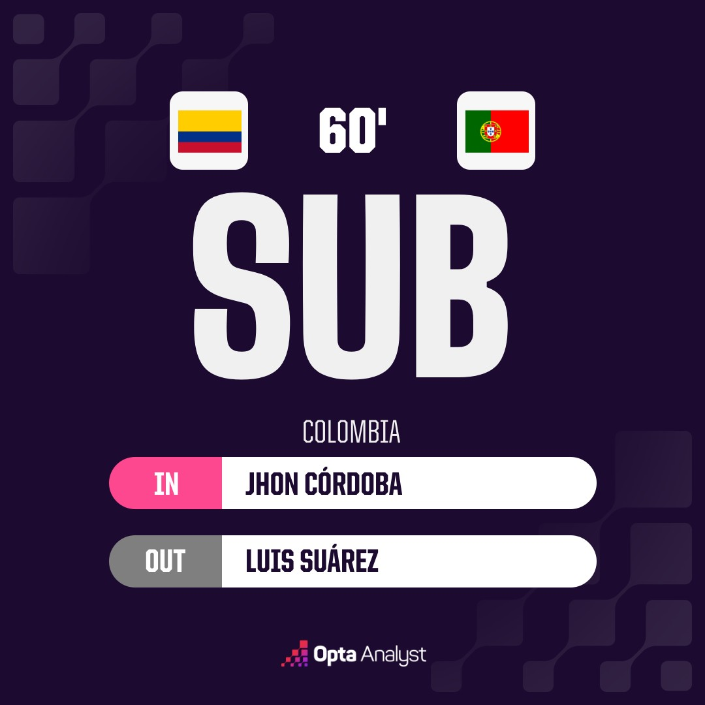
60'
Substitution! Richard Ríos replaces Jefferson Lerma for Colombia as the manager shuffles the pack. Can Richard Ríos make an impression as this match continues?
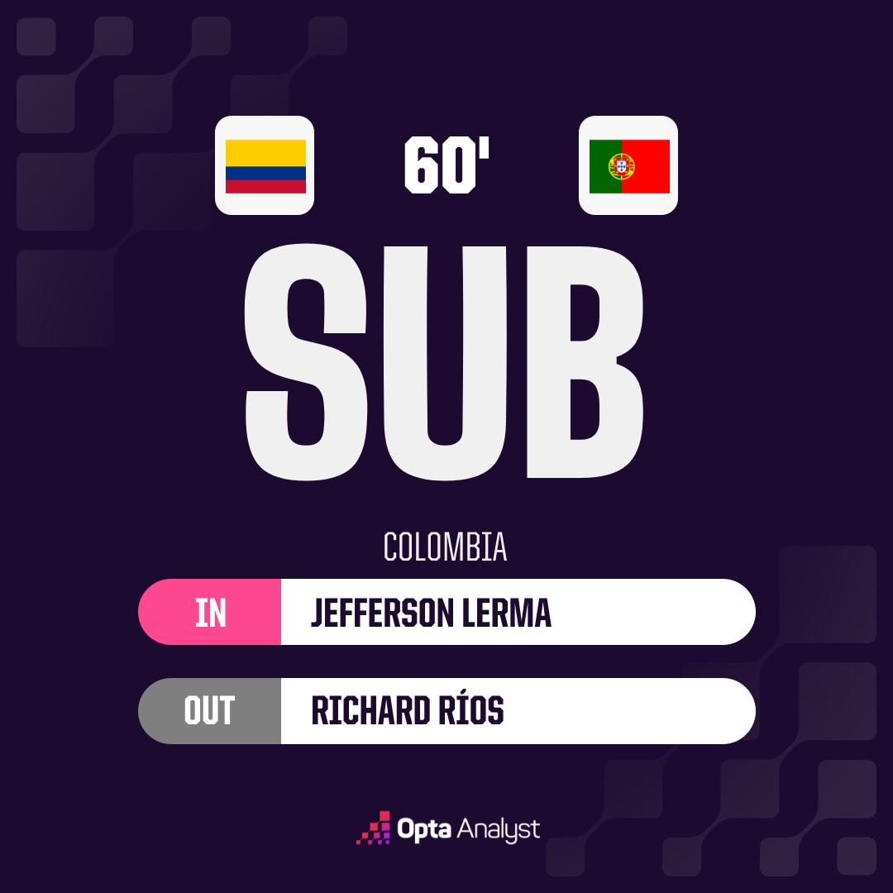
60'
Offside! Cristiano Ronaldo thought they were through on goal, but the Colombia defence stepped up in time to catch them offside, and the assistant referee puts their flag up.
57'
BLOCKED! That was close. João Félix got off a shot, which was heading in, but Davinson Sánchez was on hand to make a vital intervention. Great block!
56'
Portugal have started the second half exactly as they finished the first - patient build-up play with 20+ passes in that move. They're clearly in no rush to force things.
55'
Diogo Costa has made 5 saves, his highest total in a single match in the FIFA World Cup.
55'
That was hopeful! A bit of a punt from Jhon Arias, who goes for goal from distance, but Diogo Costa makes the save.
55'
That was hopeful! A bit of a punt from Jefferson Lerma, who goes for goal from distance, but Diogo Costa makes the save.
55'
Plenty of the ball in the last quarter-of-an-hour of this match for Colombia, but still Portugal stand firm, despite having had only 34.76% of the ball in that period. Can Colombia make their possessional dominance count?
51'
MISS! The score remains 0-0, with Colombia relieved after Portugal’s João Félix goes for goal but sends their attempt off target. Not one to write home about, that one.
49'
A rash challenge from Gustavo Puerta, who sends Bruno Fernandes tumbling, giving Portugal a free-kick. It is not in a threatening position, but it gives them a chance to get back on the ball.
49'
Colombia have started the second half exactly as they finished the first - patient build-up play with 20+ passes in that move. They're clearly in no rush to force things.
48'
A rash challenge from Cristiano Ronaldo, who sends Jhon Arias tumbling, giving Colombia a free-kick. It is not in a threatening position, but it gives them a chance to get back on the ball.
47'
Free-kick! A foul from Jhon Arias on Vitinha. It is well away from Colombia’s goal, so it is unlikely to result in a chance for Portugal.
46'
A substitution for Portugal sees João Cancelo replaced by Diogo Dalot. There does not appear to be any obvious sign of an injury, so that is a tactical switch.
46'
Substitution! João Neves replaces Rúben Neves for Portugal as the manager shuffles the pack. Can João Neves make an impression as this match continues?
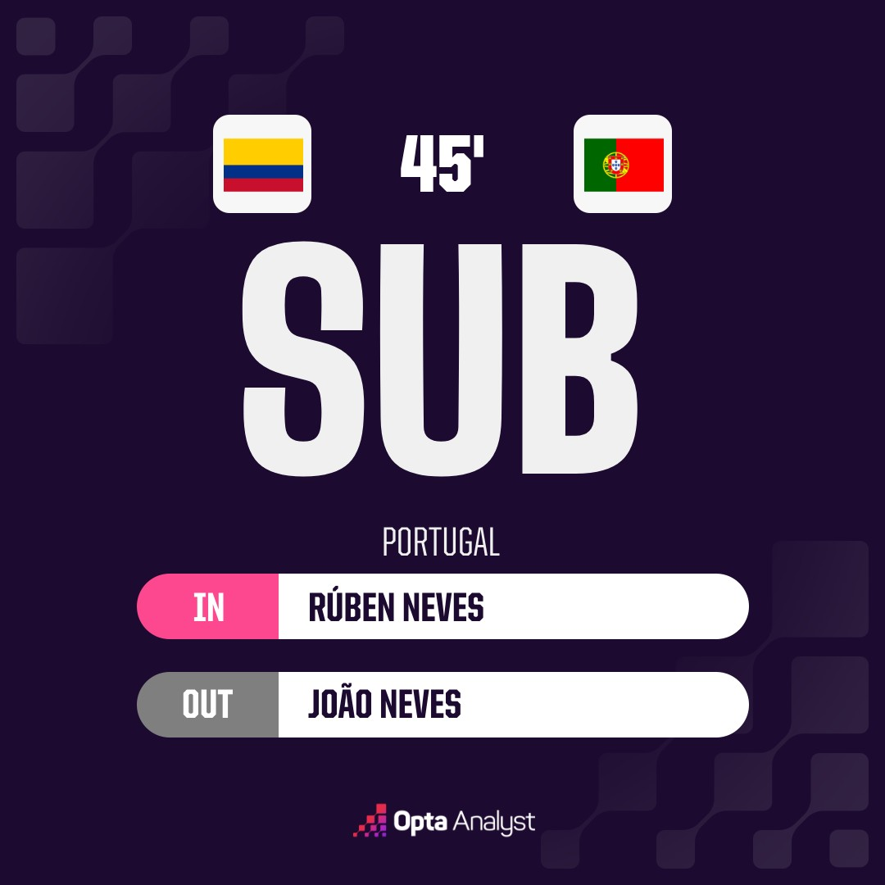
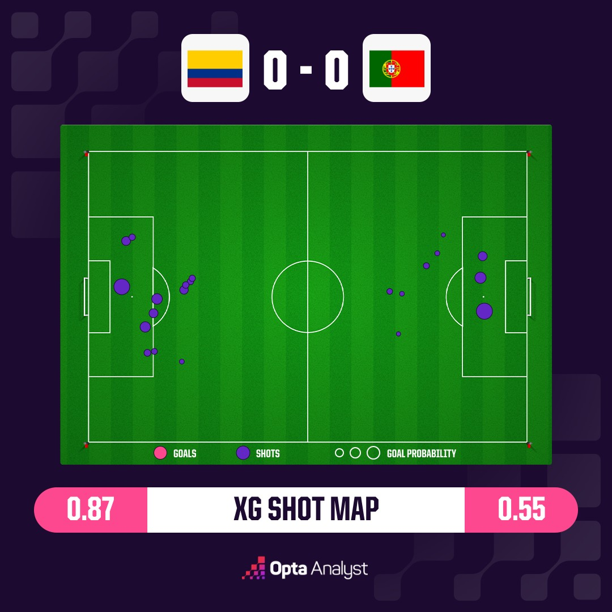
45+4'
Half-time! We reach the interval with the score level at 0-0 between Colombia and Portugal. Will we see a winner in the second half?
45+3'
That was hopeful! A bit of a punt from James Rodríguez, who goes for goal from distance, but Diogo Costa makes the save.
45+2'
Shot blocked! Cristiano Ronaldo unleashes an attempt at goal, but the ball does not reach its target thanks to Davinson Sánchez, who makes a solid block to stem the danger – for now.
45+1'
MISS! A shot from Luis Díaz ends up being off target. They might have done a bit better with that one, but it remains Colombia 0-0 Portugal.
45+1'
SAVE! A shot from outside the box by Colombia Gustavo Puerta was heading in, but Portugal Diogo Costa keeps it out with a smart stop.
45+1'
Free-kick! A foul from Jhon Lucumí on Cristiano Ronaldo. It is well away from Colombia’s goal, so it is unlikely to result in a chance for Portugal.
44'
Pedro Neto goes in on Deiver Machado and concedes a foul. The free-kick is not in a particularly dangerous area from Portugal’s viewpoint, though.
44'
BLOCK! An intervention from Renato Veiga might have just prevented a goal, with the defending player getting in the way of an attempt from Jefferson Lerma. Solid defending there!
44'
BLOCK! An intervention from Renato Veiga might have just prevented a goal, with the defending player getting in the way of an attempt from James Rodríguez. Solid defending there!
42'
MISSED! That is really poor from João Félix, who fails to convert from a golden opportunity, with the goal gaping. Will Portugal pay for their profligacy, or can they put that miss behind them?
42'
Portugal have attempted the last 6 shots in this game, Colombia last shot was taken by Jhon Arias in the 22nd minute.
40'
MISS! A shot from Rúben Neves ends up being off target. They might have done a bit better with that one, but it remains Portugal 0-0 Colombia.
39'
Shot blocked! Cristiano Ronaldo unleashes an attempt at goal, but the ball does not reach its target thanks to Santiago Arias, who makes a solid block to stem the danger – for now.
39'
What a miss! That was a huge chance for Bruno Fernandes, but they have failed to convert. What an opportunity that was for Portugal.
38'
BLOCKED! That was close. Vitinha got off a shot, which was heading in, but Jhon Arias was on hand to make a vital intervention. Great block!
37'
Colombia have had plenty of the ball in the last 15 minutes, with 81.42% possession compared to just 18.58% for their opponents. However, there has not been any shot to come from that possessional dominance, which will be a huge frustration for their coach.
36'
A free-kick to Colombia, as Renato Veiga goes in and fouls Jhon Córdoba. However, Portugal will not mind giving one away in this area too much, with plenty of distance to their goal.
34'
Not much goalmouth action to speak of in this period of the game, with no attempts made from either side. This game could spark at any moment, however. It is Colombia who have had more of the ball, controlling 83 per cent possession in the last 10 minutes.
34'
There is plenty of possession for Colombia, with 65.12% compared to Portugal 34.88 % in the last 15 minutes. However, Colombia have not been able to turn that dominance of the ball into a goal.
33'
A rash challenge from Rúben Dias, who sends James Rodríguez tumbling, giving Colombia a free-kick. It is not in a threatening position, but it gives them a chance to get back on the ball.
32'
No luck – it’s offside! Cristiano Ronaldo looked to dart in behind and get on the end of a pass, yet they just went too early, and the flag is up to signal offside.
31'
Decision overturned! The referee’s original call is deemed to be wrong by VAR, and after a check, it has been changed. The technology has played a major role there.
31'
We are going to VAR. The game has stopped for now with the assistant referee in the video booth now set to review the incident. Will the decision be altered?
24'
SAVE! A shot from outside the box by Portugal Cristiano Ronaldo was heading in, but Colombia Camilo Vargas keeps it out with a smart stop.
23'
Can Portugal make this chance count? They have won a free-kick in a threatening position after a foul from Jhon Arias on Cristiano Ronaldo. Will Colombia's defence be tested here?
22'
That is a disappointing effort from Jhon Arias, who went for glory but got their attempt wrong, and the shot sailed off target. A frustrating moment for Colombia.
18'
That’s offside! A switched-on defensive line from Portugal, as they step up at the right time to catch Luis Díaz offside, and the assistant referee’s flag is up.
17'
BLOCKED! That was close. Luis Díaz got off a shot, which was heading in, but João Cancelo was on hand to make a vital intervention. Great block!
17'
SAVED! Good work from Diogo Costa, who stands firm to deny Jhon Córdoba, who managed to get a shot away from inside the Portugal area.
14'
That is a disappointing effort from Gustavo Puerta, who went for glory but got their attempt wrong, and the shot sailed off target. A frustrating moment for Colombia.
14'
Confident start by Colombia, knocking it around with purpose and keeping control in the opening phase.
12'
No luck! Bruno Fernandes takes on a shot that, had they got it right, might have been set to test the goalkeeper, but instead it is sent off target and Colombia come away unscathed.
6'
It’s been tight so far, and Portugal are making sure it stays that way with strong defensive discipline and well-timed clearances.
6'
That is a disappointing effort from Luis Díaz, who went for glory but got their attempt wrong, and the shot sailed off target. A frustrating moment for Colombia.
4'
No luck! Rúben Neves takes on a shot that, had they got it right, might have been set to test the goalkeeper, but instead it is sent off target and Colombia come away unscathed.
4'
Foul! A free-kick now in a dangerous area for Portugal, after Nuno Mendes is fouled by Jhon Arias. Can Portugal make the most of this opportunity?
4'
Portugal enjoying a strong spell early on - their passing rhythm is already clicking as they try to set the tone.
2'
No luck – it’s offside! Jhon Córdoba looked to dart in behind and get on the end of a pass, yet they just went too early, and the flag is up to signal offside.
2'
MISS! How has that not gone in? A complete lack of composure shown from Jhon Córdoba, who squanders a golden chance for Colombia, whose coach looks on frustrated from the touchline. A real let off for Portugal!
2'
That might have been going in! A fantastic block from João Cancelo, who gets in the way of a goal-bound effort from Luis Díaz. Would the goalkeeper have been beaten? We will never know.
1'
Free-kick! A foul from Pedro Neto on Deiver Machado. It is well away from Portugal’s goal, so it is unlikely to result in a chance for Colombia.
1'
KICK-OFF! And here we go! We are up and running in this clash between Colombia and Portugal at Miami Stadium. Stay tuned for all the action as it happens!
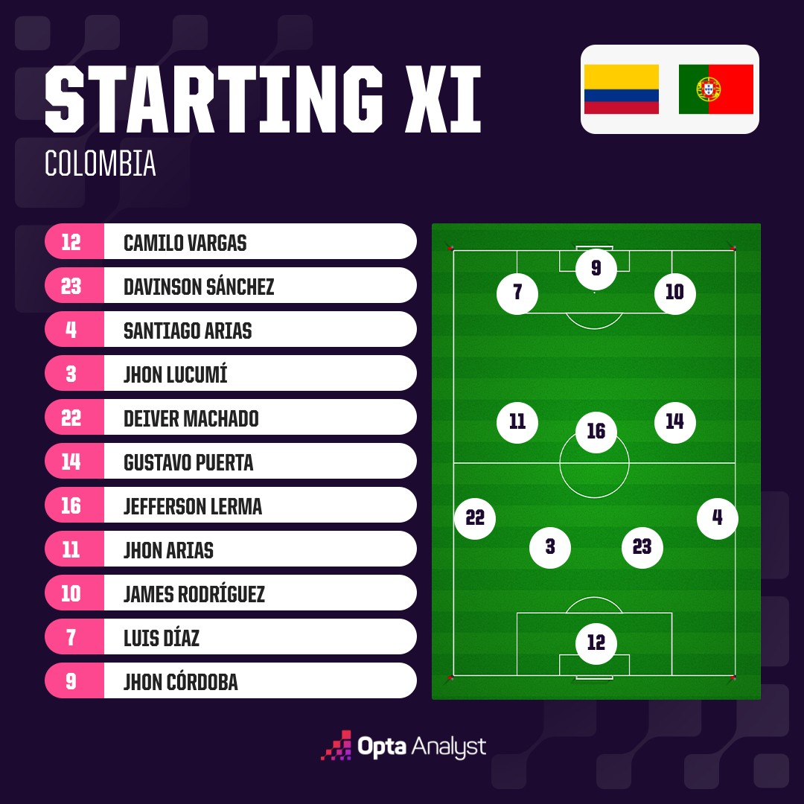
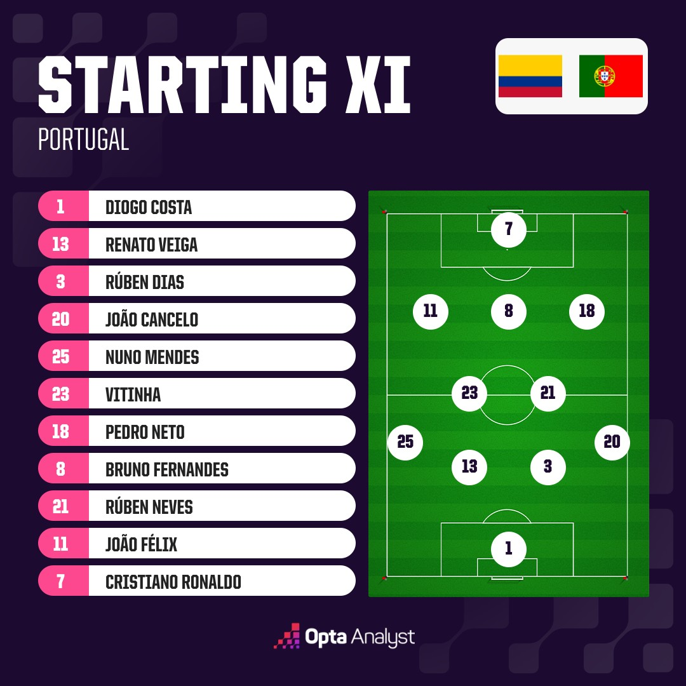
Cristiano Ronaldo is making his 25th appearance in the FIFA World Cup.
Colombia have won their last 2 games when D. Muñoz has scored
D. Muñoz has scored in the last 2 games for Colombia
Portugal play Colombia for a FIFA World Cup group stage match at Miami Stadium on Saturday with Colombia having already clinched a place in the Round of 32 and the Portuguese side looking to join them.
Colombia earned a 1-0 victory over Congo DR in their last group stage match on June 23. Daniel Muñoz was on the scoresheet in the win. They have four straight wins in all competitions. In six games this year, they have four wins and two losses.
Portugal won for the first time in the competition this year in their last group stage game on June 23, beating Uzbekistan 5-0 at Houston Stadium, extending their unbeaten streak to seven. Cristiano Ronaldo netted two to lead the scoring.
Colombia lead the group on six points. Portugal's four points place them second, currently in position to join Colombia in the Round of 32.
Elsewhere in the group, Congo DR are third on one point and still in contention for a round of 32 place. Uzbekistan are facing elimination, sitting fourth on zero points.
Colombia have been led by Muñoz in World Cup play. The defender leads the team with two goals. Ronaldo has been the leading attacking threat for Portugal, scoring twice in this season's World Cup, including one match-opening goal.
Colombia have scored in eight straight matches in all competitions. They haven't been shut out since a friendly with Canada in October 2025.
In their last six matches in all competitions, Colombia have won four and lost two. The Colombian side scored 11 and conceded seven in that period, scoring first in five of the six contests. They had five first-half goals, while their opponents netted five times in the first 45 minutes. The Portuguese side have won four and drawn two in their last six. The Portuguese side scored 12 and conceded three in that period, netting first in five of the six. They had six goals in the first half, while their opponents netted two times before the break.
-
General
Possession 54.6% 54.56345.43745.4% Possession lost in defensive half 29 292020 Possession lost in middle third 22 222828 Duels 66 666868 Duels success rate 43.9% 43.93954.41254.4% Aerial duels 13 131313 Aerial duels won 38.5% 38.46261.53861.5% Successful dribbles 4 488 Fouls won 6 61212 Offsides 3 322 Corner awarded 5 522 -
Distribution
Passes 544 544446446 Long passes 46 462929 Long passes proportion (%) 8.5% 8.4566.5026.5% Passing accuracy 89.2% 89.15490.80790.8% Passes in opponents' half 337 337234234 Passing accuracy in opponents' half (%) 86.6% 86.64786.75286.8% Total passes in the final third 195 195110110 Passing accuracy in final third (%) 85.6% 85.64185.45585.5% Forward passes 320 320261261 Forward passes (%) 58.8% 58.82458.5258.5% Through balls 0 011 Final third entries 57 575050 Penalty area entries 23 232020 Total open play crosses 10 101111 Crosses 11 111313 Crossing accuracy 27.3% 27.27315.38515.4% -
Attack
Goals 0 000 Shots 24 241313 Shots on target 6 622 Blocked shots 7 744 Headed shots 3 311 Shots outside the box 9 988 Shots inside the box 15 1555 Shots accuracy excluding blocked shots 35.3% 35.29422.22222.2% Shooting accuracy 25.0% 2515.38515.4% Key Passes 20 2088 -
Defence
Tackles 15 1599 Tackles success rate 53.3% 53.33355.55655.6% Clearances 16 162222 Interceptions 6 61313 Recoveries 34 343939 Attacking third recovery 4 444 Defensive third recovery 21 212222 Midfield third recovery 9 91313 Recoveries in attacking half (%) 11.8% 11.76510.25610.3% -
Discipline
Fouls conceded 12 1266 Yellow cards 1 100 Red cards 0 000